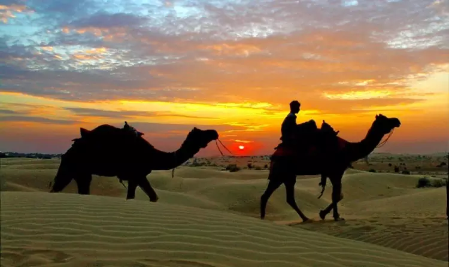
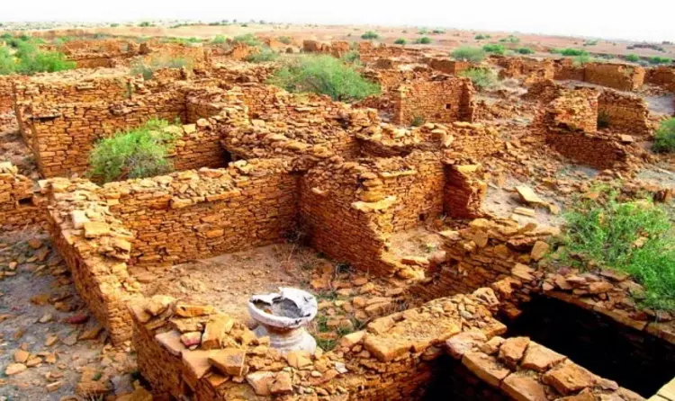
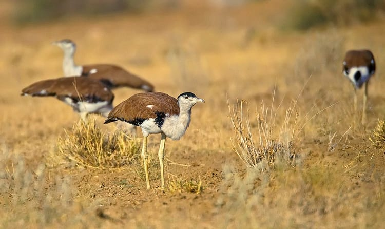
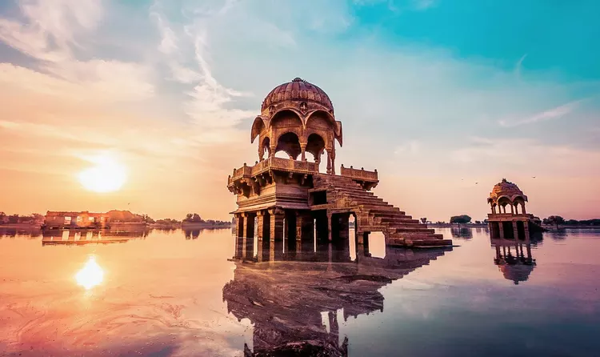

The Jaisalmer Fort is one of the largest forts in the world. It is called the Sonar Qila in the local language as it is made of yellow sandstone.
The Jaisalmer Fort takes on a yellow hue in the sun rays and turns a beautiful honey gold colour at sunset. The golden yellow colour of the fort makes it camouflaged in the sandy stretches of Jaisalmer. Furthemore, the Jaisalmer Fort is the only living fort in the country.It is home to a number of people and is noted for the palaces, Jain temples, Laxminath temple, massive gateways and merchant havelis that are enclosed within its walls.
PLACES TO VISIT
01 JAISALMER FORT

02 SAM SAND DUNES

The Sam Sand Dunes make for one of the most popular tourist destinations in the state of Rajasthan. It is the point where one can completely lose oneself in the mesmerizing beauty of the Thar Desert.
From this point there is only a vast stretch of sand dunes with sparse or no vegetation.There are several camps at this point which can offer you a Desert Safari on a camel. In the months of February and March, the region turns into a cultural hub.
03 KULDHARA ABANDONED VILLAGE

Located 18 km away from Jaisalmer, the Kuldhara village is known as the ghost village. Lying abandoned from the past few centuries, this village has no signs of human life and is also known as one of the haunted places in Rajasthan.
However, during the contemporary times, this hamlet has become one of the significantly
visited places in Jaisalmer.A clan of eighty-five villages, Kuldhara was once inhabited by the Paliwal Brahmins, but due to some adverse happenings, the natives evacuated the village within a night. Also, there have been no traces, where and how the villagers left their homes; only assumptions and wild guesses hinted their invasion to some of the nearby regions. Since then there has been no signs of human dwelling or any other activities within the surroundings.
04 DESERT NATIONAL PARK

Desert National Park is considered to be one of the Best Places to visit in Rajasthan. Desert National Park is unfurled over a substantial area of three thousand square kilometres. Wildlife safari has been introduced at the Desert National Park, Rajasthan gripping the tourist to this place from afar.
This is a place called an abode by an exuberant number of species like black buck, desert gerbil, desert fox, chinkara, blue bull and agama eagles.
Distance or location:Desert National Park is located in Jaisalmer, Rajasthan at Bada Bagh.
Best time to visit: Best time to visit Desert National Park is between the months November to January.
Charges:The entry fees to Desert National Park is 20 INR or 0.307 USD for Indians and 160 INR or 2.460 USD for Foreigners.
Distance or location:Desert National Park is located in Jaisalmer, Rajasthan at Bada Bagh.
Best time to visit: Best time to visit Desert National Park is between the months November to January.
Charges:The entry fees to Desert National Park is 20 INR or 0.307 USD for Indians and 160 INR or 2.460 USD for Foreigners.
05 GADSISAR LAKE

Gadsisar Sagar Lake is situated to the South of the city walls of Jaisalmer. The Gadsisar Lake was once the main source of water for the people of the region and is surrounded by shrines and small temples.
The temples have elaborate archways and the lake looks extremely beautiful flowing by the side of these temples.In winters, the lake looks even more picturesque and the tranquillity of the place is broken only by the chirping of a variety of birds that flock here. There is a very interesting legend regarding the construction of the arched gate near the Gadsisar Lake.Also check, some of the best places to visit in Jaisalmer.It is believed that a beautiful courtesan offered to fund the construction of the arched gateway.